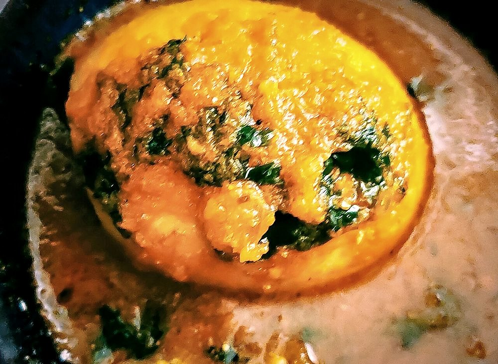

Allergens: none of the common ones
Ingredients
Quantities for 4.
- 8, hard-boiled and peeled Eggs
- 3, finely chopped Onion
- 400g, chopped Tomato
- 1 tbsp paste Ginger
- 1 tbsp paste Garlic
- 1 tsp Turmeric
- 1.5 tsp Chilli Powder
- 2 tsp Coriander Powder
- 1 tsp Cumin Seeds
- 1 tsp Garam Masala
- a handful Coriander Leavesoptional
- 3 tbsp Mustard Oil
- to taste Salt
Cookware
stovetop, kadhai
Before you start
- Prick or lightly score the boiled eggs before they go in. Whole smooth eggs sit in the gravy without taking any of it up.
- Frying the eggs briefly in turmeric and salt before adding them gives a skin that holds the masala.
Method
- Halve or score the peeled eggs. Toss them in a little turmeric and salt.
- Fry the eggs in hot mustard oil for 2 minutes until blistered and golden. Lift out.Stand back, they spit.
- In the same oil crackle the cumin, then fry the onion for 10 minutes until deep brown.
- Add ginger and garlic, cook a minute, then the ground spices with a splash of water so they do not burn.
- Add the tomato and cook 10 minutes until the oil separates from the masala.
- Pour in 300ml hot water, season, and simmer 5 minutes. Return the eggs and cook 5 minutes more.
- Finish with garam masala and coriander.
Storage
Keeps 2 days refrigerated. The eggs firm up as they sit; the gravy improves. Do not freeze, boiled egg whites turn rubbery.
Nutrition Medium estimate
| Per serving293 g | Per 100 g | |
|---|---|---|
| Calories | 292+ kcal | 100+ kcal |
| Protein | 13.7+ g | 5+ g |
| Carbohydrate | 16.3+ g | 6+ g |
| of which sugars | 6.7+ g | 2+ g |
| Fibre | 3.9+ g | 1+ g |
| Fat | 19.8+ g | 7+ g |
| of which saturated | 4.1+ g | 1+ g |
| of which unsaturated | 14.0+ g | 5+ g |
The + means ingredients given to taste rather than by weight are counted as zero, so the true figure is a little higher than shown. Worked out from the listed quantities. Some of the ingredient list is given to taste rather than by weight, so treat these as a guide. Ingredients given to taste rather than by weight are counted as zero, so the real figure is a little higher than this. The + says so. Some ingredients have no exact match in the nutrient database and use the nearest equivalent: garam masala. Estimated from raw ingredients using USDA FoodData Central. Cooking changes are not modelled, and added salt is excluded, so sodium is not given.
Recipe v1.0.0, last updated 2026-07-31. Curated for Khaana and kept under version control.